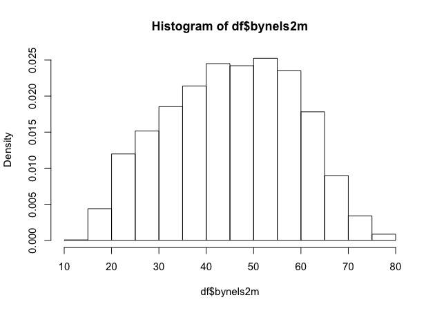

Workshop on R
May 2018
Hosted by Virginia Education Science Training (VEST) Program at UVA

Overview Schedule Getting started Modules Data
Exploratory data analysis II
Another key part of exploratory data analysis is making plots that let you visually inspect the data. This module will focus on graphics.
R has three major graphing systems: the base system, lattice, and ggplot2. Each system has its benefits and drawbacks and each is also very versatile with many, many options for creating and adjusting plots.
Unfortunately, there isn’t enough time to go through all three graphing systems. After describing a few base R graphing functions, this module will focus on ggplot2 since it allows users to build plots using the grammar of graphics and integrates well with the tidyverse.
We’ll use the same ELS plans data we’ve been using, again in Stata format since it has variable and value labels.
## libraries
library(tidyverse)
library(haven)
library(labelled)
## read in Stata data file
df <- read_dta('../data/els_plans.dta')
Plots using base R
Even though users have developed new graphics libraries, the base R graphics system is still very powerful. It’s also very easy to use in a pinch. When I want a quick visual of a data distribution that’s just for me, I generally use base R.
Histogram
For continuous variables, a histogram is a useful plot. Though the
hist() function has many options to adjust how it looks, the defaults
work really well.
## histogram of math scores
hist(df$bynels2m)

Quick exercise
Check the distribution of reading scores.
Density
Density plots are also really helpful. R doesn’t have single density plot function, but you can get a density plot in one of two ways, each of which will give a slightly different result.
First, you can adjust the hist() function to add the freq = FALSE
argument. It looks like the first histogram above, but notice that the
y-axis now represents density rather than counts.
## density plot of math scores with hist() function
hist(df$bynels2m, freq = FALSE)

Second, you can plot() the density() of a continuous variable.
Unlike hist(), however, density() doesn’t automatically ignore
missing values, so we have to tell it to remove NAs.
## density plot of math scores
plot(density(df$bynels2m, na.rm = TRUE))

Quick exercise
Plot the density of reading scores. Next, try to use the
colargument inplot()to change the color of the line to'red'.
Box plot
Call a box plot using the boxplot() function. This one is a little
trickier because it uses the R
formula construction
to set the continuous variable against the group. (We’ll talk more about
formulas in the module on modeling.) The formula uses a tilde, ~, and
should be constructed like this:
<var> ~ <group var>
Notice how we can use the data argument instead of adding df$ in
front of the variable names.
## box plot of math scores against student expectations
boxplot(bynels2m ~ bystexp, data = df)

Scatter
Finally, plot continuous variables against one another using the base
plot() function. There are two primary ways to make a scatter plot
using plot():
plot(x, y)plot(y ~ x)
With both, x is the variable that will go on the x-axis and y the
one that will go on the y-axis. It’s really a matter of which makes
sense to you. We’ll use the first.
## scatter plot of math against reading scores
plot(df$bynels2m, df$bynels2r)

Quick exercise
Rerun the above plot, but this time store it in an object. Next, plot reading scores against math scores using the second formula method and store it in another object. Visually compare the two, but for a more formal test, use
identical(plot_1, plot_2)on the two plot objects to prove they are the same.
Plots using ggplot2
The first few times I tried to use ggplot2, I didn’t quite get it. But once I did (and it doesn’t take too long!), I really started to like it. It’s now my go-to system for making plots.
The ggplot2 system is too involved to cover in all of its details, but that’s kind of the point of the grammar of graphics: once you see how it’s put together, you can anticipate the commands you need to build your plot.
We’ll start by covering the same plots as above.
Histogram
As the main help site says, all ggplot2 plots need three things:
- data
- how variables in the data map onto the plot (e.g., what’s on the x-axis? what’s on the y-axis)
- what kind of figure you want to make (e.g., what do you want to do with those data and mappings?)
Depending on the plot you want to make, each of these pieces may be
called at different points in the command structure, which is usually
made up of linked functions like other tidyverse libraries. The key
difference between ggplot2 and dplyr, for example, is that while dplyr
uses the pipe (%>%) to connect different functions, ggplot2 uses a
plus sign (+).
We’ll start by making a histogram again. To help make these pieces
clearer, I’ll use the argument names when possible. The first function,
which initializes the plot is ggplot(). Its first argument is the
data.
The aesthetic mappings, that is, which variables go where or how they
function on the plot, go inside the aes() function. Since we only have
one variable, bynels2m, it is assigned to x.
If we stop there and print…
## init ggplot
p <- ggplot(data = df, mapping = aes(x = bynels2m))
p

…nothing! Well, not nothing, but no histogram. That’s because the plot
object p knows the data and the key variable mapping but doesn’t know
what do with them. What do we want?
Since we want a histogram, we add the geom_histogram() function to the
existing plot object. Trying again…
## add histogram instruction
p <- p + geom_histogram()
p

Success!
Density
Unlike the base R graphics system, ggplot2 does have a density plotting
command, geom_density(). We’ll go ahead and chain it to the first
command and print.
Notice how the function chain is the mostly the same as above, but (1)
written in a single linked chain and (2) using a different geom_*()
command at the end to indicate that we want something different.
## density
p <- ggplot(data = df, mapping = aes(x = bynels2m)) +
geom_density()
p

Quick exercise
Make a density plot of reading scores.
If we want to superimpose the density plot over the histogram, we only need chain the two commands together with a slight modification in how the histogram is made. This way, the histogram and the density will be on the same scale.
The change happens in the geom_histogram() function, where we add a
new mapping: aes(y = ..density..). (NOTE: this is similar to what we
did above in base R to make a histogram on a density scale.)
## histogram with density plot overlapping
p <- ggplot(data = df, mapping = aes(x = bynels2m)) +
geom_histogram(mapping = aes(y = ..density..)) +
geom_density()
p

It worked, but it’s not the greatest visual since the colors are the same and the density plot is thin with no fill.
Adding to what came before, the geom_histogram() and geom_density()
both take on new arguments that change the defaults. Now the resulting
plot should look nicer and be easier to read.
## histogram with density plot overlapping (add color to see better)
p <- ggplot(data = df, mapping = aes(x = bynels2m)) +
geom_histogram(mapping = aes(y = ..density..),
color = 'black',
fill = 'white') +
geom_density(fill = 'red', alpha = 0.2)
p

Quick exercise
Try changing some of the arguments in the last plot. What happens when you change
alpha(keep the value between 0 and 1)? What does thecolorargument change? Andfill? What happens if you switch thegeom_*()functions, callgeom_histogram()after you callgeom_density()?
Two-way
Plotting the difference in a continuous distribution across groups is a common task. Let’s see the difference between student math scores between students with parents who have any postsecondary degree and those without.
Since we’re using data that was labelled in Stata, we’ll first use
val_labels() to check the bypared variable.
## get parental education levels, use `val_labels()` to show them
val_labels(df$bypared)
{missing}
-9
{survey component legitimate skip/na}
-8
{nonrespondent}
-4
did not finish high school
1
graduated from high school or ged
2
attended 2-year school, no degree
3
graduated from 2-year school
4
attended college, no 4-year degree
5
graduated from college
6
completed master^s degree or equivalent
7
completed phd, md, other advanced degree
8
The way this variable is structured prevents us from using a >= test
like we have been. We want to count parents with a two-year degree (4)
in addition to those having a Bachelor’s degree or higher (6, 7, and
8), but we don’t want to count those who attended, but didn’t earn a
degree (5).
To do this, we’ll use the special operator %in% which does exactly
what it sounds like. If a value of bypared is in the set that we
give it, then the new indicator pared_coll will be 1; if not, 0.
The ggplot() function doesn’t need to use our full data. In fact, our
data needs to be set up a bit differently to make this plot. We’ll make
a new temporary data object that only has the data we need.
## need to set up data
plot_df <- df %>%
select(bypared, bynels2m) %>%
na.omit() %>% # can't plot NAs, so drop them
mutate(pared_coll = ifelse(bypared %in% c(4,6,7,8), 1, 0)) %>%
select(-bypared)
## show
head(plot_df)
# A tibble: 6 x 2
bynels2m pared_coll
<dbl> <dbl>
1 47.8 0
2 55.3 0
3 66.2 0
4 35.3 0
5 30.0 0
6 24.3 0
To plot against the two groups we’ve made, we need to add it to the
aesthetic feature, aes(). The math score, bynels2m, is still mapped
to x, but since we want two side-by-side histograms, we set the fill
aesthetic to our new indicator variable. So the function knows that it’s
a group, we wrap it in the factor() function.
Finally, we add some changes to the geom_histogram() function so that
each group is on the same scale.
## two way histogram
p <- ggplot(data = plot_df,
aes(x = bynels2m, fill = factor(pared_coll))) +
geom_histogram(alpha = 0.5, stat = 'density', position = 'identity')
p

Quick exercise
Remove some of the new arguments in
geom_histogram(). How does the resulting plot change? Remove thefactor()function from aroundpared_coll: what happens?
Box plot
By this point, you’re hopefully seeing the pattern in how ggplot2
figures are put together. To make a box plot, we need to add a y
mapping to the aes() in addition to the x mapping. We don’t have to,
but we’ve also added the same variable to fill as we did to x. We do
this so that in addition to having different box and whisker plots along
the x-axis, each plot is given its own color.
## box plot using both factor() and as_factor()
p <- ggplot(data = df,
mapping = aes(x = factor(bypared),
y = bynels2r,
fill = as_factor(bypared))) +
geom_boxplot()
p

Quick exercise
Change the
as_factor()andfactor()functions above. How does the plot change?
Scatter
To make a scatter plot, make sure that the aes() has mappings for the
x axis and y axis and then use geom_point() to plot. To make
things easier to see, we’ll first reduce the data to 10% of the full
sample using sample_frac() from dplyr.
## sample 10% to make figure clearer
df_10 <- df %>% sample_frac(0.1)
## scatter
p <- ggplot(data = df_10, mapping = aes(x = bynels2m, y = bynels2r)) +
geom_point()
p

Now that we have our scatter plot, let’s say that we want to add a third dimension. Specifically, we want to change the color of each point based on whether a student plans to earn a Bachelor’s degree or higher. That means we need a new dummy variable that is 1 for those with BA/BS plans and 0 for others.
We can look at the student base year expectations with table()…
## see student base year plans
table(df$bystexp)
-1 1 2 3 4 5 6 7
1450 128 983 879 561 5416 3153 2666
…but those numbers don’t tell us much. Since we read in a Stata data
file with labelled values, though, we can use the val_labels()
function to see our options.
## see how the labels map
val_labels(df$bystexp)
{survey component legitimate skip/na}
-8
{nonrespondent}
-4
{don^t know}
-1
less than high school graduation
1
high school graduation or ged only
2
attend or complete 2-year college/school
3
attend college, 4-year degree incomplete
4
graduate from college
5
obtain master^s degree or equivalent
6
obtain phd, md, or other advanced degree
7
Now we see that bystexp >= 5 mean a student plans to earn a Bachelor’s
degree or higher. Let’s create that.
## create variable for students who plan to graduate from college
df_10 <- df_10 %>%
mutate(plan_col_grad = ifelse(bystexp >= 5, 1, 0))
Now that we have our new variable plan_col_grad, we can add it the
color aesthetic, aes() in geom_point(). Don’t forget to use
factor() so that ggplot knows to treat it like a group!
## scatter
p <- ggplot(data = df_10,
mapping = aes(x = bynels2m, y = bynels2r)) +
geom_point(mapping = aes(color = factor(plan_col_grad)), alpha = 0.5)
p

Quick exercise
Change how you make
plan_col_gradso that instead of 1 and 0, you use ‘yes’ and ‘no’. Make your figure again. What changes?
Fitted lines
It’s often helpful to plot fitted lines against a scatter plot to help
see the underlying trend. There are a number of ways to do this with the
geom_smooth() function.
Linear fit
Setting method = lm in geom_smooth() will fit a simple straight line
with 95% confidence interval shaded around it.
## add fitted line with linear fit
p <- ggplot(data = df_10, mapping = aes(x = bynels2m, y = bynels2r)) +
geom_point(mapping = aes(color = factor(plan_col_grad)), alpha = 0.5) +
geom_smooth(method = lm)
p

Linear fit with polynomials
In addition to the method, we can add a formula to allow the fitted
line to take a non-linear shape. Using the aes() values of x and
y, the argument below uses an R formula, y ~ x, but with the
addition of the poly() function. Setting the second argument in
poly() to 2 gives the line an extra quadratic term, which allows it to
take a more curved shape.
## add fitted line with polynomial linear fit
p <- ggplot(data = df_10, mapping = aes(x = bynels2m, y = bynels2r)) +
geom_point(mapping = aes(color = factor(plan_col_grad)), alpha = 0.5) +
geom_smooth(method = lm, formula = y ~ poly(x,2))
p

Quick exercise
Change the value in
poly()to higher numbers. How does the line change?
Loess
Finally, we can skip trying to adjust a linear line and just fit a loess.
## add fitted line with loess
p <- ggplot(data = df_10, mapping = aes(x = bynels2m, y = bynels2r)) +
geom_point(mapping = aes(color = factor(plan_col_grad)), alpha = 0.5) +
geom_smooth(method = loess)
p

Plotly
As a final example, we’ll turn our last plot into an interactive plotly
figure. Plotly works
with a number of languages, but it integrates really well with ggplot.
In fact, once the plot is made, we only have to use the ggplotly()
function to make it interactive.
## load plotly library
library(plotly)
Attaching package: 'plotly'
The following object is masked from 'package:ggplot2':
last_plot
The following object is masked from 'package:stats':
filter
The following object is masked from 'package:graphics':
layout
## create an interactive plot with the last figure
p <- ggplotly(p)
p
Other than the neat! factor, the plotly figure is great for pinpointing outliers. Looking at the figure, hover over markers that seem outside the expected value. Clearly, this can be a great tool for inspecting your data.
Hovering over each point, however, it’s not immediately clear which
observation is being considered. Sure, we could record the math and
reading scores along with the plan_col_grad value and then search for
them in the data, but it would be much easier if we could change the
tooltip to give us a unique identifier, like the student ID.
Luckily, plotly will let us do this. We’ll remake the last plot in
ggplot2, but add a small bit to the aes() in the form of a text
argument. Instead of using the default tooltip values, we’ll paste0()
our own together, using friendly variable names and rounded values
(round()). So that the information looks neat, we’ll use HTML break
line commands, <br>, to separate each line. Finally, when we call
ggplotly() this time, we’ll change the tooltip argument from the
default 'all' to 'text' so it only includes our nicely formatted
text.
## redo last figure with addition of text in aes()
p <- ggplot(data = df_10, mapping = aes(x = bynels2m, y = bynels2r)) +
geom_point(mapping = aes(color = factor(plan_col_grad),
text = paste0('stu_id: ', stu_id,
'<br>',
'college?: ', plan_col_grad,
'<br>',
'math: ', round(bynels2m, 2),
'<br>',
'read: ', round(bynels2r, 2))),
alpha = 0.5) +
geom_smooth(method = loess)
## create an interactive plot, and limit tooltip to text argument above
p <- ggplotly(p, tooltip = 'text')
p
Now it’s really easy to find outliers!
Quick exercise
Use the plotly figure to inspect your data, particularly outliers.